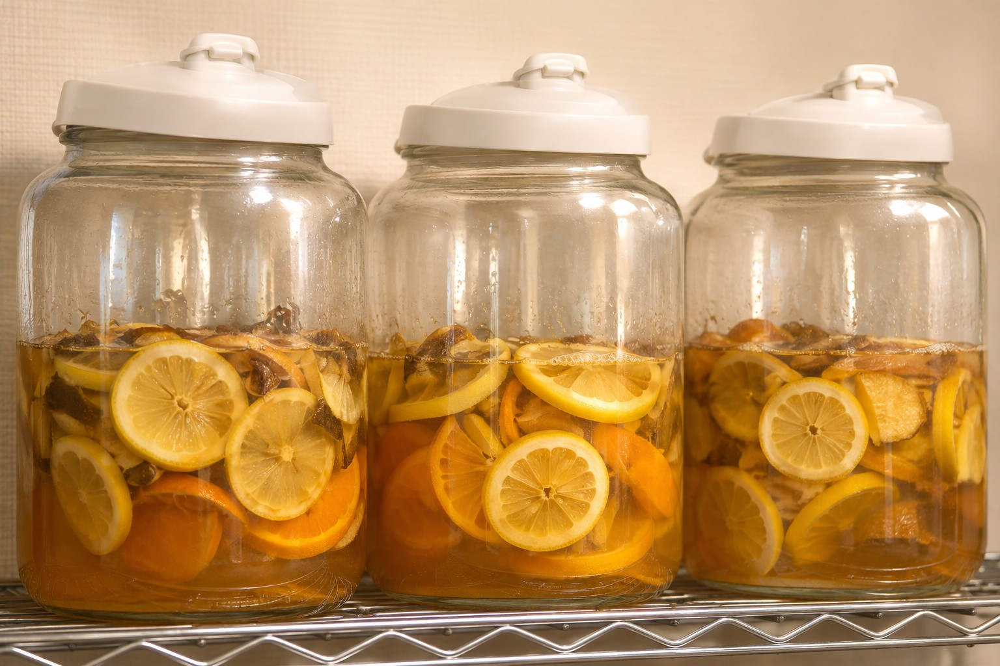
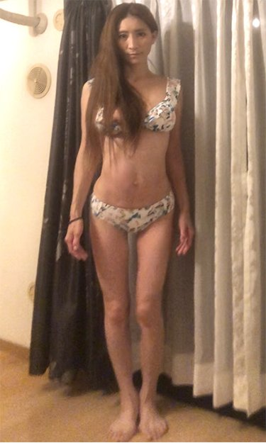

無添加だから
家族みんなで安心安全
お好きなフルーツ・てんさい糖・特殊なミネラル水だけで作ります。てんさい糖は上白糖よりミネラルやビタミンを含み、腸内環境を整える天然のオリゴ糖入り。
厚生労働省が推奨する必須ミネラルは16種類。当教室では微量元素ミネラル※が30種類以上含まれた特殊なミネラル水を使用します。
※人体を構成する元素のうち、酸素・炭素・水素・窒素を除いたミネラルの中で、極めて少量しか存在しないもの
デザイン確認用
自分にも家族にも
安心安全な食事で
「美しく健康に」なりたい方へ
美しく健やかな暮らしのきっかけに。
ミネラル醗酵ドリンクの作り方を学ぶ教室です。
ミネラル醗酵
ドリンク教室
4,000円
5,000円＋送料
日程・準備物などの詳細は、
お申し込み後にご案内します。
ひとつでも当てはまったあなたへ
ミネラル醗酵ドリンクを
おすすめします。

お好きなフルーツ・てんさい糖・特殊なミネラル水だけで作ります。てんさい糖は上白糖よりミネラルやビタミンを含み、腸内環境を整える天然のオリゴ糖入り。
厚生労働省が推奨する必須ミネラルは16種類。当教室では微量元素ミネラル※が30種類以上含まれた特殊なミネラル水を使用します。
※人体を構成する元素のうち、酸素・炭素・水素・窒素を除いたミネラルの中で、極めて少量しか存在しないもの
身体の約70%は水分。だからこそ「摂る水分の質」を高めることが体質改善の近道です。農薬や添加物など避けにくい化学物質を、身体の中から排出できる体質づくりをサポートします。
お水や炭酸水で割ってジュースに、大人はお酒で割っても美味しくいただけます。
人の身体は自然界にないものにとても弱く、化学物質はエネルギーや波動を下げてしまいます。ミネラル醗酵ドリンクで体質改善を促し、下がったエネルギーや波動を上げて運気UPにつなげます。
ミネラル醗酵ドリンクを、
ご自身の手で作るレッスンです。
お茶の時間も含めて、約1時間半〜2時間。
教室で作ったドリンクは、お持ち帰りいただけます。
ミネラル醗酵ドリンク
マスターコーチ
添加物エキスパート
薬膳インストラクター
2016年ベストボディジャパン
ミスモデル部門 レディースクラス
初代グランプリ
2児の母。ミネラル醗酵ドリンクを生活に取り入れ、41歳で2人目を出産。誰でも簡単に家族の健康を支える方法を広める活動を続けています。キムチや味噌、パウンドケーキ作りの教室も含め、関東中心に対面・オンラインで講座を開催中。
YouTubeチャンネルを見る朝のみファスティングで体質のベースを底上げ。身体の内側から健康に美しくなるのを実感し、気持ちも前向きに、運気もいい流れに変わっていきました。

掲載するご感想を確認中です
こちらに、お客様のご感想を掲載します。4,000円
銀座・世田谷で開催
5,000円＋送料
教室で使用するキットをお送りします。
お申し込みフォームから送信
日程・準備物などの詳細をご案内
教室当日（対面またはオンライン）
日程・準備物などの詳細は、
お申し込み後にご案内します。
年齢を問わず幅広い方に安心して飲んでいただけるよう工夫されています。ただし体質により合わない場合もありますので、気になる方は医師にご相談いただくか、少量から始めることをおすすめします。
個人差がありますが、2週間〜1ヶ月ほどで体調の変化や腸内環境の改善を実感される方が多いです。まずは1ヶ月の継続をおすすめしています。
新鮮な果物や野菜など自然由来の材料を使用します。醗酵のコツや材料選びのポイントをしっかりお伝えするので、ご自宅でも再現可能。お好みの材料でアレンジも楽しめます。
正しく作れば冷蔵保存で約1ヶ月ほどお楽しみいただけます。醗酵が進むと酸味が増すため、風味が変わりすぎる前に飲み切るのがおすすめ。保存方法も教室で詳しくご説明します。
ミネラル醗酵ドリンク作りを
始めてみませんか。
4,000円
5,000円＋送料
日程・準備物などの詳細は、
お申し込み後にご案内します。
ご参加前のご質問は、
電話・メールでお気軽にどうぞ。